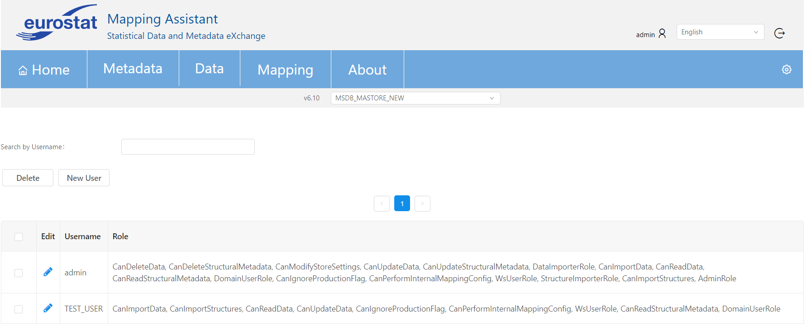
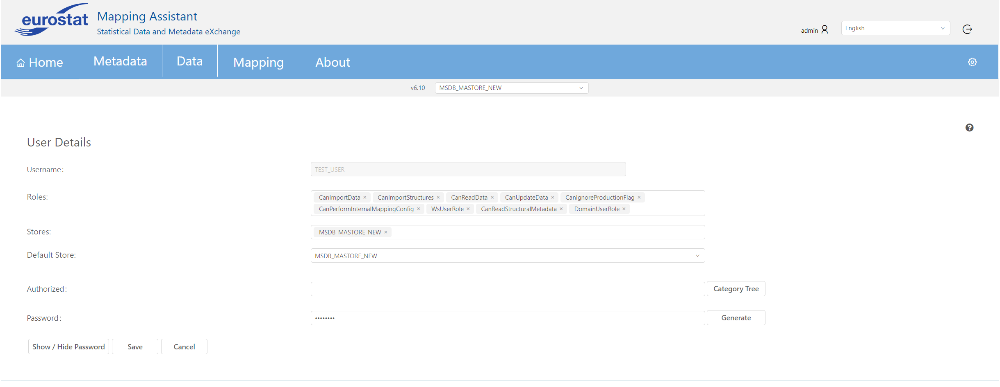

MANAGE USERS
To navigate to this mask, Admin should hover over the gear icon (on the right side of the navigation bar) to see the available items and press Manage under Users menu item.

ADD/EDIT/DELETE USERS
Admin user can add a new user by pressing New User button on the upper left corner of the screen.

There is also a functionally for searching by username and deleting a selected user through the delete button.
Admin can edit an existing user by pressing the icon on the Edit column and enter the User Details mask.

Regarding the roles description please read the page Roles .
Additionally, appropriate permissions for Categories and Dataflows can be applied by pressing Category Tree button.
Admin can add permissions for users, meaning specific Categories / Dataflows this specific user has access to.
This restricts access to the Category Management screen and the user is only able to view full details of artefacts they are permitted to see.
For all other artefacts only the ID is visible and Categories cannot be expanded.